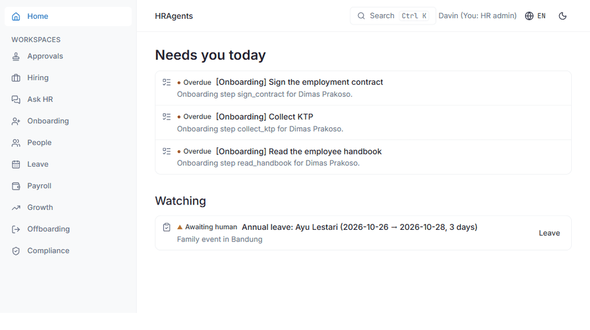
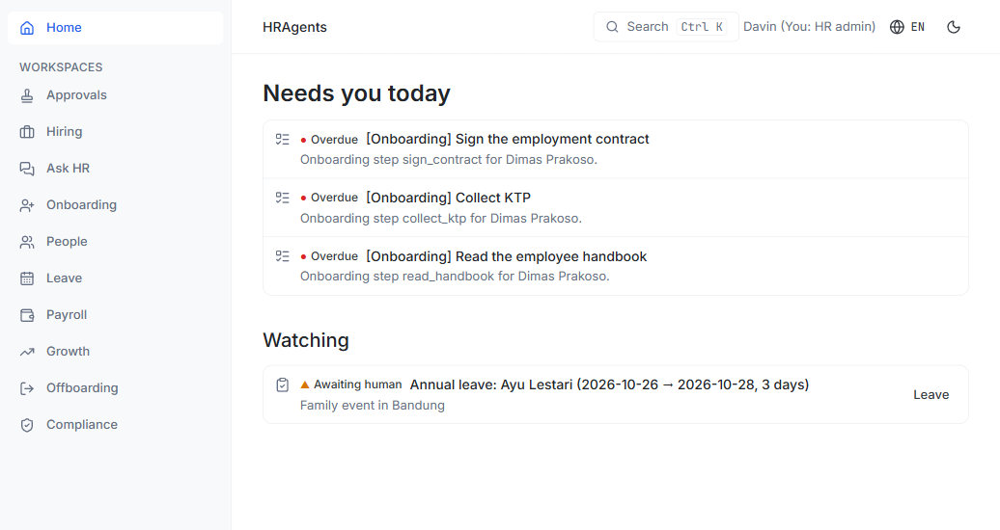
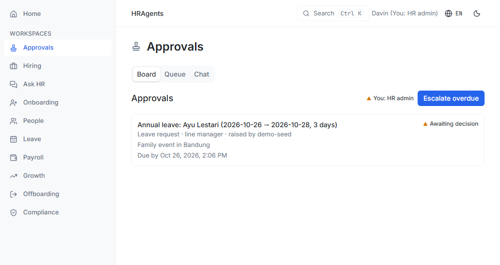
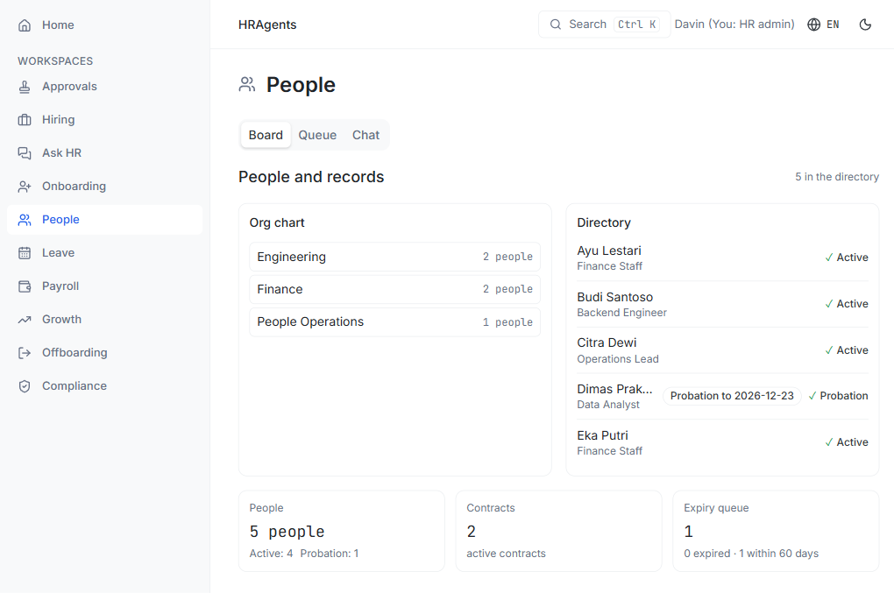
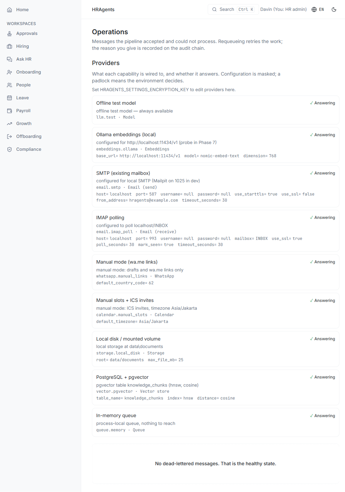

HRAgents¶
A virtual HR team for the HR department of one.
HRAgents is a self-hosted platform for the whole employee lifecycle — hiring, onboarding, records, leave, payroll preparation, compliance, growth and offboarding. Language models extract and draft; deterministic code scores and routes; a named human decides everything consequential. Every outcome is reconstructible from a tamper-evident audit chain.
Quickstart Architecture GitHub
What it actually does¶
- Evaluates candidates with a deterministic scorer. LLM agents deconstruct a CV and portfolio into structured evidence; the score is pure Python over that evidence, with the references behind every dimension. The same input scores the same, every time.
- Bounds automation in code. Auto-scheduling requires a high score, low run-to-run variance, zero anomaly flags and evidence for every dimension. Rejections above the merit floor require a named human; below it, a documented rejection with a feedback report. Unevidenced scores are zeroed and can neither schedule nor reject automatically.
- Runs the department, not just the ATS. Onboarding plans, contracts and expiry reminders, leave balances and approval queues, payroll runs with operator-verified statutory tables (never hardcoded rates), growth cycles, compliance deadlines and data-subject requests, offboarding and asset clearance — in nine workspaces over one audit trail.
- Keeps a real record. Every state transition is an audit entry in a hash chain. Evaluations persist the exact rubric family and digest that produced them; payroll runs are immutable once reviewed and a re-run supersedes rather than overwrites.
- Degrades honestly. No cloud keys are required. The offline test model, hash embeddings, local documents and manual WhatsApp/calendar transports are the defaults; each provider reports whether it is configured and answering.
What it deliberately does not do¶
| Not done | Why |
|---|---|
| Execute payments | Payroll is prepare, verify and export; bank files are a human step |
| Auto-reject above the merit floor | A rejection is a named human's decision with a reason |
| Run shell or arbitrary command tools | Agents read and extract; they do not operate the machine |
| Hardcode statutory rates | Operator-maintained, source-verified rate tables gate payroll math |
| Decide who gets hired | The system routes evidence and drafts; people decide |
| Scrape or infer protected attributes | Scoring consumes only the four documented dimensions |
How the pieces fit¶
flowchart LR
CV[CV / portfolio] --> EXTRACT[Extraction agents]
EXTRACT -->|structured evidence + refs| SCORE[Deterministic scorer]
SCORE -->|S, σ, evidence| POLICY[Policy engine]
POLICY -->|auto-schedule| SCHED[Scheduling]
POLICY -->|HITL| HUMAN[Named human]
HUMAN -->|decision + reason| AUDIT[(Audit chain)]
SCHED --> AUDIT
HUMAN --> DEPTS[Leave · Payroll · Growth · Compliance · Offboarding]
DEPTS --> AUDITThe full pipeline, the automation bounds, and the data model are documented under Architecture; the exact decision table is in Human-in-the-loop bounds.
A look inside¶

The demo dataset, seeded through the real services:




Status¶
v0.1.0 — the core loop, nine workspaces, the PWA, payroll preparation,
compliance, observability and a self-host compose stack are in place. Open work
is tracked honestly in Remaining work.
Apache-2.0. Built and tested in Jakarta; Bahasa Indonesia and English in the dashboard.